LMCache：面向企业级大模型推理的高效 KV 缓存层
LMCache: An Efficient KV Cache Layer for Enterprise-Scale LLM Inference
阅读状态、进度与收藏只保存在你的浏览器里。
逐节精读
这部分按论文的章节顺序，用本站自己的话把整篇论文从头讲一遍。读懂某个概念需要的背景知识，会在第一次用到它之前单独讲清楚（青色框）。每个结论都尽量说出“因为什么、所以什么”。这篇论文以 CC BY 4.0 许可发布，所以原图直接放在讲到它的地方，并说明这张图怎么看；原图没画到的概念，用本站画的示意图补上。标“推算”的数字是本站根据论文数据或公开的模型配置算出来的，标“读图”的数字是从原图上估读的，都不是论文原话。每节末尾有英文原文的链接。
0 导读：这篇论文解决什么问题
大模型处理一段输入时，会为每个 token、在每一层算出一对向量，叫 key 和 value，合起来称为 KV 缓存。之后生成每一个新 token，都要回头读这些向量。传统的推理系统把 KV 缓存当作一次请求内部的临时数据：它只放在 GPU 显存里，请求结束后很快就被新请求的数据覆盖掉。
这几年大模型的用法变了。多轮对话每一轮都要把之前的对话历史重新送进模型；文档问答和检索增强生成（RAG）会让许多问题反复带上同一份文档；编程智能体的上下文动辄几万 token，每一步只在末尾追加一点。在这些场景里，大量输入的开头和以前的某个请求一模一样。如果当时算出的 KV 缓存还留着，就可以直接拿来用，省掉“把输入重新读一遍”（prefill）的时间和 GPU。麻烦在于，这些值得留下的 KV 缓存太大，显存根本装不下，只能挪到 CPU 内存、本地磁盘甚至远端存储里，用的时候再搬回 GPU。另一个需求来自 PD 分离：prefill 和 decode 放在不同的 GPU 上跑，KV 缓存必须从一组 GPU 传到另一组。
LMCache 是芝加哥大学 Junchen Jiang 组（后来成立了公司 Tensormesh）开发的开源“KV 缓存层”。它插在推理引擎（vLLM、SGLang）和各种存储、网络之间，负责把 KV 缓存从引擎里取出来，存到不同层级的设备上，需要时搬回 GPU，或者在两个引擎之间传送。这篇论文是一份系统报告，重点不是一个新算法，而是三件工程上的事：怎么把搬运做快（把小页拼成大块再传、让传输和计算重叠），怎么和变化飞快的推理引擎解耦（作者推动进 vLLM 的 KV connector 接口），以及怎么让上层系统直接管理 KV 缓存（查找、迁移、钉住、压缩等控制接口）。在作者的实验里，vLLM 加上 LMCache 在多轮问答和文档分析负载上，同样首 token 延迟下的吞吐最高达到原来的十几倍；论文最后还总结了一些企业部署中的经验。
读完这部分，你应该能回答这几个问题：
- KV 缓存为什么要离开 GPU 显存？“跨请求复用”和“PD 分离”分别需要它做什么？
- 一个 token 的 KV 缓存有多大？一份几万 token 的文档要占多少空间、搬一次要多久？
- CPU 内存和网卡的带宽并不低，为什么以前的系统搬 KV 搬得很慢？分页布局和“小块传输”是什么关系？
- LMCache 用了哪些办法让搬运变快，每一种各自消除了哪一种浪费？
- 它怎么接进 vLLM 而不需要改 vLLM 的代码？上层的路由器怎么知道 KV 缓存存在哪台机器的哪一层？
- 什么时候“从别处加载 KV”反而比“重新算一遍”更慢？
- 15 倍、400 Gbps 这些数字是在什么条件下、和谁比出来的，能说明多少问题？
- 同期的 Strata 和 SGLang HiCache 走了一条怎样不同的路线？
版本说明。本页按 arXiv v2（2025-12-05）讲解。v1（2025-10-08）的摘要、章节组织和一部分实验与 v2 不同：v2 新增了第 2 节的使用统计和第 8.3 节的多模型真实 trace 实验，把第 9 节改写成七条经验；v1 里一些部署细节（例如把数据搬运放进单独进程可以消除 5%–10% 的延迟开销）在 v2 中被删掉了。需要时本页会指出。
1 引言：KV 缓存为什么要离开 GPU
大模型生成文字是“接龙”：每一步根据前面所有 token 预测下一个 token。每一层的注意力在处理当前 token 时，要拿它的 query 去和之前每个 token 的 key 比相似度，再用这些相似度把之前每个 token 的 value 加权平均。之前那些 token 的 key 和 value 在它们自己被处理时就已经算过了，所以系统把它们存下来，下一步直接读，这就是 KV 缓存（详细推导见 vLLM 精读 §2.2）。
处理一个请求分两个阶段。prefill 把整段输入一次性算完，生成所有输入 token 的 KV 缓存和第一个输出 token；它是大矩阵乘法，主要消耗 GPU 的算力。decode 之后每一步只算一个新 token，但要读一遍全部 KV 缓存；它主要消耗显存带宽。用户看到第一个字之前要等的时间叫 TTFT（time to first token），基本由 prefill 决定；之后相邻两个字之间的间隔叫 ITL（inter-token latency）。
每个 token 的 KV 缓存有多大，可以直接从模型配置算出来：
这里 \(n_{\text{layer}}\) 是层数，\(n_{\text{kv}}\) 是 KV 头数（这些模型都用分组查询注意力 GQA，KV 头比 query 头少），\(d_{\text{head}}\) 是每个头的维度，BF16 时 \(b=2\)。以 Llama-3.1-8B 为例：\(2\times32\times8\times128\times2=131{,}072\) 字节，即每个 token 128 KiB。论文实验用到的几个模型（推算，按公开的 config.json，KV 按 BF16 存）：
| 模型 | 层数 | KV 头 × 维度 | 每 token KV | 1 万 token 的 KV |
|---|---|---|---|---|
| Llama-3.1-8B | 32 | 8 × 128 | 128 KiB | 1.31 GB |
| Qwen2.5-Coder-32B、Qwen3-32B | 64 | 8 × 128 | 256 KiB | 2.62 GB |
| Qwen3-Coder-480B-A35B | 62 | 8 × 128 | 248 KiB | 2.54 GB |
| Llama-3.1-70B、Qwen2.5-72B | 80 | 8 × 128 | 320 KiB | 3.28 GB |
也就是说，一份 1 万 token 的文档（大约十几页 PDF），在 70B 模型上对应 3 GB 以上的 KV 缓存。一张 80 GB 的 H100 扣掉模型参数之后，只能放下有限几份这样的文档。想动手算其他模型，可以用第 8.7 节里的计算器。
作者先指出，KV 缓存原本的用途很窄：它只在一次请求内部使用，帮助 decode 阶段跳过对输入的重复计算。于是每个请求都由一个推理引擎实例独立处理，计算和数据搬运全都发生在这个实例的 GPU 和显存里。这个“一个请求、一个实例、一块显存”的假设，正在被两个趋势打破。
前缀缓存（prefix caching）。同一个 token 在不同上下文里的 KV 缓存是不同的，因为从第二层起每层的输入都混入了它前面的内容。所以只有当两个请求从第一个 token 起完全相同时，这段相同开头（前缀）的 KV 缓存才能共用。vLLM 用“链式哈希”识别前缀：把 token 按块切开，每块的哈希值由前一块的哈希和本块的 token 一起算出，两个请求某一块的哈希相同，就说明从开头到这一块都相同；SGLang 用一棵基数树做同样的事（见 SGLang 精读 §3.3）。这两种做法都只在 GPU 显存里缓存。显存满了，最久没用的块就被淘汰，下次再遇到同样的前缀只能重算。
PD 分离。prefill 吃算力、decode 吃带宽，放在同一张 GPU 上会互相干扰：一个长 prefill 插进来，所有正在 decode 的请求都要停下来等。PD 分离把两个阶段放到两组 GPU 上，prefill 算完后把 KV 缓存传给 decode 那一组（见 DistServe 精读 §3.3 和 Mooncake 精读 §3）。这就要求 KV 缓存能被高效地从一个引擎“拿出来”，再“塞进”另一个引擎。
第一个趋势是跨请求缓存：把 KV 缓存保存到比请求寿命更长的地方（例如更便宜的下层存储），后面的请求只要前缀相同，就不必重算。第二个趋势是 PD 分离：prefill GPU 产出的 KV 缓存必须传给 decode GPU。两者都要求 KV 缓存能离开产生它的那块显存。作者还用自己项目的使用统计说明，用户存下的 KV 缓存总量增长很快，远超 GPU 显存能装下的量（第 2 节详细讲）。
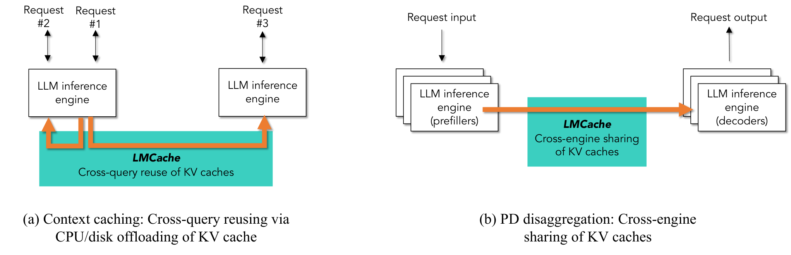
要让这两件事落地，推理引擎必须支持几种它原来没有的操作：在一次正常推理中把 KV 缓存取出来（extract），在后续请求需要时装回去（reload），把取出的 KV 缓存持久地存起来（store），以及在分布式的多个引擎之间传送（transfer）。作者强调，这些操作要真正有用，必须同时满足两个条件：一是够快，否则搬运本身的时间就把省下的计算吃掉了；二是能跟上 vLLM、SGLang 这类引擎的快速迭代，否则每次引擎升级都要重写一遍。
论文列出三项贡献：
- 高度优化的搬运性能。把存取操作批量化，让存取与 GPU 计算流水重叠（例如算第 \(i\) 层时加载第 \(i+1\) 层）；不按推理引擎自己的小页大小传输，而是按可配置的、比页大得多的“块”传输，把设备之间的带宽跑满；在不同存储层之间搬运时尽量不多拷贝。
- 和推理引擎之间的标准接口。作者统计，2025 年平均每周有 15–20 个新的开源权重模型发布，推理引擎为了支持新模型和新硬件，经常改动显存里 KV 缓存的布局。LMCache 设计了一个模块化的 KV connector 接口，把自己和引擎内部实现解耦。
- 灵活的 KV 缓存管理接口。把 KV 缓存作为一种新的数据对象暴露出来，提供定位、移动、钉住、压缩等 API，让路由器、调度器这样的上层组件做出“知道 KV 在哪”的决策，例如把请求路由到已经存有它前缀的实例。
LMCache 支持的存储层级包括 CPU 内存、本地磁盘、远端磁盘和 Redis，支持的网络包括以太网、RDMA 和 NVLink。作者称，在本地前缀缓存、分布式前缀复用和 PD 分离几种场景下，LMCache 相对开源框架自带的 KV 缓存机制和商业推理 API，吞吐最高提高 15 倍、延迟至少降低一半。
- “第一个、也是最高效的开源 KV 缓存方案”是作者的自我定位，“第一个”要看怎么算：vLLM 在 2023 年就能把 KV 块换出到 CPU 内存（vLLM 精读 §4.5），Mooncake 在 2025 年开源了跨机器的 KV 缓存池 Mooncake Store。LMCache 项目始于 2024 年 5 月，它的特点在于把“分层存储、跨引擎传输、管理接口”做成了一个独立于引擎的通用层。
- 引言里的“延迟至少降低 2 倍”和后文的数字对不上：第 8.2 节 QPS=1 时 TTFT 降低 1.9–8.1 倍，第 8.5 节 PD 分离的平均 TTFT 降低 1.53–1.84 倍，都有低于 2 倍的情况。摘要的“最高 15 倍”在 v2 正文里能找到的最大值是第 8.2 节的 14 倍。第 8 节会逐项说明这些倍数的条件。
2 动机与真实使用数据：存下来的 KV 远超显存，而且被反复使用
2.1 KV 缓存：一种“模型原生”的知识表示
作者先换了一个角度看 KV 缓存：它记录了到目前为止每一对 token 之间的注意力信息，可以看作模型自己能直接读的一种知识表示。一份文档读一遍，就留下一份它的 KV 缓存；以后的问题只要以这份文档开头，模型就能“直接回忆”而不必重读。上下文越来越长、人们越来越喜欢给推理加上背景知识，于是在不同用户请求之间共享 KV 缓存就越来越流行。
2.2 真实使用数据
论文的证据来自用户自愿开启的使用统计（usage tracker）。第一组数据在引言里，是 LMCache 本身的增长：
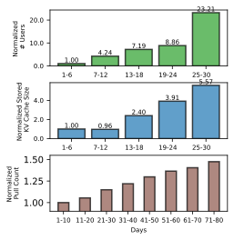
第二组数据说明存下的 KV 有多少放不进显存。图 3 按周统计用户新存下的 KV 缓存字节数，并分成“放得进 GPU 显存的部分”和“超出显存的部分”。
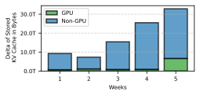
为了体会这个差距，可以做一个粗算（推算）。Llama-3.1-8B 跑在一张 80 GB 的 H100 上，参数占 16 GB；按 vLLM 默认的 90% 显存利用率、忽略激活值，大约剩 56 GB 给 KV 缓存，按每 token 128 KiB 能放约 43 万个 token，也就是 21 份第 8.2 节实验里那种 2 万 token 的文档。同一台机器上给 LMCache 的 500 GB CPU 内存，能放约 380 万个 token，即 190 份左右，大约是显存的 9 倍。用户数一多、会话一长，只靠显存缓存就留不住几份文档。
第三组数据说明这些存在显存外的 KV 确实会被用到。作者定义了“每 token 平均复用次数”：被复用的 token 数除以全部存下的 token 数，只统计显存之外的部分。
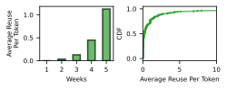
2.3 两种把 KV 搬出 GPU 的场景
从这两个趋势（显存外的 KV 越来越多、它们被复用的次数也越来越多），作者得出结论：需要一个高效的层，专门负责把 KV 缓存搬出、搬回 GPU。业界已经存在两种这样的场景：
- 上下文缓存（跨请求复用）：把一次请求的 KV 缓存片段保存下来，给之后共享同一前缀的请求使用。典型例子是文档分析（同一份文档或文档片段被多次提问）和带固定系统提示或长开场白的多轮对话。它直接减少 prefill 的计算，从而降低 TTFT 和每个请求消耗的 GPU 时间。
- PD 分离（跨引擎传输）：prefill 和 decode 放在不同的 GPU 或节点上，decode 不再被 prefill 打断，尾延迟随之降低，代价是 KV 缓存必须跨机传输。
两种场景都受同一个问题限制：缺少一个能高效地把 KV 缓存从 GPU 取出、装回的库。下一节讲为什么这件事难。
- 数据来自自愿开启统计的 LMCache 用户，样本本身就偏向“有复用需求、愿意装缓存层”的人，不能代表所有推理负载的复用程度。
- 全部是归一化值或相对值，没有给出用户数、请求数、模型分布的绝对量；时间窗口只有 5 周（图 1 为 30 天和 80 天）。“前 10 名用户”的平均值也会被少数大用户主导。
- “放得进 / 放不进 GPU 显存”是怎么判定的，论文没有给出定义。这组数据更适合理解为“趋势在增长”的定性证据。
3 挑战与已有方案：搬 KV 难在哪里
KV 缓存能待的地方可以排成一个层级：越往下容量越大、单位容量越便宜，但离 GPU 越远，带宽越低、延迟越高。下面的示意图把每一层到 GPU 的带宽画在对数刻度上。
在 CPU 和 GPU 之间搬数据，一般调用 cudaMemcpyAsync，由 GPU 上专门的拷贝引擎（DMA 引擎）完成，可以和计算内核同时进行。但每发起一次拷贝都有固定开销：CPU 要准备参数、驱动要排队、完成后要发信号。Strata 论文用排队论里的利特尔定律把这件事说得很清楚：设同时在途的传输有 \(C\) 个、每次传 \(S\) 字节、每次耗时 \(L\)，那么能达到的吞吐是 \(X=C\cdot S/L\)。在途传输数 \(C\) 受 CPU 线程数和驱动队列限制，延迟 \(L\) 里有一大块是固定开销，于是最现实的办法是把每次传输的大小 \(S\) 做大。每次只传几十 KB，固定开销占了大头，带宽就跑不满。
3.1 挑战一：分页显存让 I/O 变成大量小传输
早期保存和传输 KV 缓存的做法，是直接用 PyTorch 的序列化（torch.save / torch.load）或简单的张量拷贝，速度通常不到 1 GB/s。这些方法对 KV 缓存这种大数据结构开销很大，也不支持和各种存储设备之间的零拷贝，CPU 和 GPU 之间会多出额外的数据拷贝。
vLLM、SGLang 这类高吞吐引擎让事情更难。它们用分页的方式管理 KV 缓存（PagedAttention，见 vLLM 精读 §4.1）：显存被切成许多固定大小的小页，一个请求的 KV 缓存分散在不连续的页上。在 vLLM 里，一页是“16 个 token、一层”的 KV，大小通常在 16–64 KB；论文举例说 Llama-3.1-8B 的一页是 62.5 KB（按模型配置推算是 16 × 8 × 128 × 2 × 2 字节 = 64 KiB，量级一致）。分页对批处理和显存利用率很有好处，但对搬运很不友好：因为页不连续，搬走一个请求的 KV 缓存就要发起成千上万次小传输。
举个例子（推算）：Llama-3.1-8B 上一份 1 万 token 的文档，每层有 10,000 ÷ 16 = 625 页，32 层一共 20,000 页。如果一页一次传输，就是两万次 64 KB 的拷贝。如果开了张量并行，KV 头被分到几张卡上，每张卡上的一页还会更小（例如 70B 模型用 4 卡并行时，每卡只存 2 个 KV 头，一页只有 16 KiB）。
小传输跑不满带宽，有现成的测量为证。论文引用了 UCCL 团队的数据（原文表 1）：两台 AMD GPU 节点之间用 8 张 400 Gbps 的 Broadcom Thor-2 网卡相连，传输消息越小，实际吞吐越低。
按这个表推算：把 70B 模型上 1 万 token 的 KV 缓存（3.28 GB）用 64 KB 的消息传，按 4 GB/s 要约 0.8 秒；用 16 MB 以上的消息传，按 49 GB/s 只要约 0.07 秒。论文还引用了另一组测量（来自 Strata）：在 CPU 和 GPU 之间，单次传输要到 1–2 MB 才能用到 PCIe 5.0 理论带宽的 75%–80%。
3.2 挑战二：推理引擎变化太快
新模型和新加速器发布得非常频繁，作者引用的统计是 2025 年平均每 4 天就有一个重要的大模型发布。推理引擎为了支持它们，必须跟着快速迭代，而每次改动往往会改变显存分配方式，进而改变 KV 缓存的格式。例如 vLLM 换了一个新的注意力内核，产出的 KV 缓存维度排列不同了，KV 缓存库就得跟着改，把新格式翻译成自己能处理的格式。如果缓存库直接依赖引擎内部的数据结构，维护负担会大到跟不上。
3.3 挑战三：缺少管理接口
当 KV 缓存成了推理后端里的“一等公民”，除了推理引擎本身，很多组件和运维团队都需要根据 KV 缓存的位置和状态做决策。比如路由器负责把请求分给多个推理实例中的一个，它需要知道哪个实例的 CPU 内存里已经存有这个请求前缀的 KV 缓存，才能把请求送过去。没有统一的接口来定位、淘汰、钉住或压缩缓存，上层模块就只能盲目决策，结果是缓存利用率低、重复存储、淘汰行为不可预测。
论文举了两个用户需求的例子（企业名均未披露）：一家金融公司在 2025 年初要求能显式钉住经常被访问的金融文档的 KV 缓存，让热门上下文总能快速取到；一家做智能体的公司要求一组 API，能找到某段内容对应的 KV 缓存、把它压缩，再把压缩后的结果传到其他节点。
3.4 已有方案为什么不够
作者把已有方案分成五类：
- 推理部署框架：vLLM Production Stack（2025 年 1 月发布）、NVIDIA Dynamo、AIBrix、llm-d、SGLang OME、KServe 等，主要解决在 Kubernetes 上部署推理引擎，支持按负载或按前缀命中来路由请求。论文指出其中 vLLM Production Stack、Dynamo、llm-d 和 KServe 的 KV 缓存功能就是用 LMCache 实现的，所以它们和 LMCache 是上下游关系，不是竞争关系。
- 引擎自带的 KV 缓存：vLLM、SGLang 自带把 KV 缓存从 GPU 卸载到 CPU 的功能，但面向单机，缺少跨节点传输的优化，也不支持多级存储。第 8 节会和它们比较。
- KV 缓存存储层：Mooncake、Redis、InfiniStore、3FS 提供分布式对象存储或缓存，但缺一个在推理引擎和这些存储之间高效搬运大量小张量的“胶水层”，或者和某一个推理框架绑得太紧。
- 闭源实现：Fireworks AI、Together AI 等商业 API 内部也做了前缀缓存，但只能在它们自己的服务里用。
- 研究原型：前缀缓存、PD 分离、KV 压缩方向有大量开源原型，但多数基于 HuggingFace Transformers 这类研究用框架，离生产可用有距离，也不会跟着 vLLM、SGLang 一起演进。
LMCache 不是凭空出现的。同一个组此前有两篇相关的论文。CacheGen（SIGCOMM 2024，第一作者 Yuhan Liu）研究怎样通过网络把 KV 缓存流式传给 GPU：它把 KV 缓存量化、编码成更小的比特流，用有损压缩换传输时间，并根据带宽调整压缩率。CacheBlend（EuroSys 2025 最佳论文，第一作者 Jiayi Yao）研究 RAG 场景下“不是前缀”的复用：几个检索出来的文档片段各自的 KV 缓存被拼在一起时，片段之间的注意力没有算过，CacheBlend 只挑一小部分 token 重算来修补，从而在几乎不损失质量的前提下复用非前缀的 KV。第 9 节作者自己说，LMCache 最初（2024 年 5 月）就是作为把这些研究放进去的统一原型框架而设计的，后来才因为工业需求转向性能和稳定性。
4 系统总览：一层夹在引擎和存储之间的缓存
LMCache 的定位是一层统一的、高性能的 KV 缓存层：上面接 vLLM、SGLang 这样的推理引擎，下面接各种存储和网络设备，中间负责 KV 缓存的存储、移动和显式管理。它的目标是让前缀缓存和 PD 分离在企业规模下真正可用，同时不被引擎的快速演进拖累。
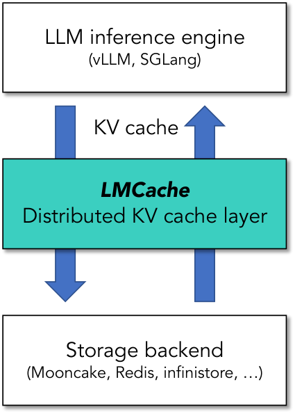
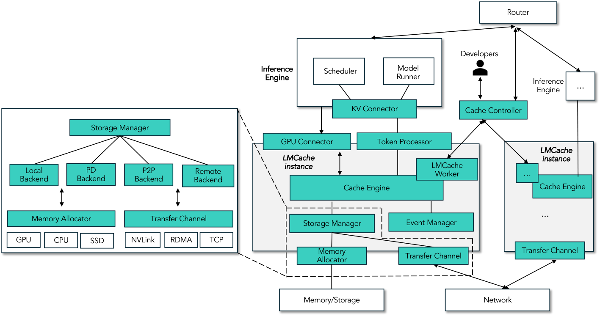
论文用三条路径把这些组件串起来。
存（Store）。新请求先经过 KV connector，它准备好元数据：分好词的输入 token，以及这些 token 的 KV 缓存在显存中所在页的地址。然后 token processor 算出有多少新 token 还没存进后端、需要存。最后 storage manager 通过 transfer channel 把这些新 token 的 KV 缓存写进后端。
取（Retrieve）。当请求需要从后端加载 KV 缓存时，同样先由 KV connector 准备元数据，token processor 找出后端里有多少个与它前缀匹配的 token。接着 event manager 查看这个请求 ID 以前是否见过：如果见过，说明之前查找时已经把地址记下来了，直接交给 GPU connector 把 KV 缓存拷回显存；event manager 还会按第 5.2 节的方式发起逐层的异步加载。如果没见过，就交给 storage manager 去查这些 KV 缓存在 CPU 内存里的地址。
lmcache/v1/token_database.py：每块的键由前缀哈希链算出），论文正文没有展开。本站的理解：“见过这个请求”通常意味着调度器之前已经为它查过一次命中（vLLM 的文档说明第 6 节的 get_num_new_matched_tokens 对同一请求可能被调用多次），这时不必重复查找。查找（Lookup）。路由器这类上层组件想知道某些 token 的 KV 缓存是否存在，就去问 cache controller。controller 维护一个 token 池，记录后端里当前存着的所有 token；每当某个 LMCache 实例存入或淘汰了 KV 缓存，实例里的 LMCache worker 就把新状态报告给 controller，所以这个 token 池总是最新的。第 7 节会详细讲 controller 的接口。
5 性能优化：把小页拼成大块、让搬运藏在计算后面、少拷贝
作者把这三个问题归纳为：（1）主流引擎按页管理 KV 缓存，在 vLLM 里一页是“16 个 token、一层”，对 Llama、Qwen、GPT-OSS 等常见模型大约 20–63 KB，这么小的单位传不满带宽；（2）KV 缓存的传输经常要和推理同时进行，如果传输和计算放在同一个 CUDA 流上，传输会让推理停下来；而且每次调用拷贝函数都要消耗 CPU 时间，层数和页数一多，这部分 CPU 开销相当可观；（3）大量请求不断产生 KV 缓存，如果在每个存储设备上都复制一份，既浪费空间，又因为拷贝而拖慢推理。作者说这些都是开源和企业部署中吃过亏才总结出来的。
5.1 批量化操作：按块而不是按页传输
可配置的块大小。LMCache 不按页传输，而是把多层的多个页拼成一个更大的块（chunk），默认每块 256 个 token，块大小可以根据 I/O 速度调整。拼接借助一块中转用的“流式 GPU 缓冲区”完成。存的时候，先用一个自定义的 CUDA 内核把散落在分页显存里的 KV 缓存拷进连续的缓冲区，再由 DMA 引擎把整块卸载到下层存储（例如 CPU 内存）；取的时候反过来，先由 DMA 引擎把整块从存储层拷进缓冲区，再由 CUDA 内核把它拆回各层的页。
按块传输还顺带减少了 CPU 的开销：原来每一页都要单独调用一次拷贝函数，现在一块只要一次。对一份 1 万 token 的 Llama-3.1-8B 文档，大约是“两万次小拷贝”变成“40 次大拷贝”（推算：10,000 ÷ 256 ≈ 39.1，向上取整）。
并行的存取操作。LMCache 能同时在多个存储层级上存取：本机的 CPU 内存或磁盘、远端的 CPU 内存或磁盘，以及对象存储（如 S3）。实际负载里经常需要同时做几件事，例如把一个热门上下文的 KV 缓存从 GPU 移到 CPU 内存的同时，把一个冷门上下文从 CPU 内存挪到本地磁盘。为了让每条链路都忙起来，LMCache 的存取 API 可以同时接收多个源设备和目标设备，在不同的链路上并发搬运；如果链路是全双工的（例如 PCIe 两个方向可以同时传），读和写还能同时进行。
decode 阶段延迟写出。decode 阶段每生成一个 token 就多出一份 KV 缓存。如果每个 token 一产生就写出去，会变成极其频繁的小写入。LMCache 先把它们攒在缓冲里，凑满一个块（默认 256 个 token）再批量写出，降低写入频率和 I/O 开销。
5.2 计算与 I/O 重叠
逐层流水。模型是一层一层算的，第 \(i\) 层的注意力只需要第 \(i\) 层的 KV 缓存。所以不必等全部层的 KV 缓存都加载完才开始算：LMCache 给计算和数据搬运分配不同的 CUDA 流，在算第 1 层之前先把第 1 层的 KV 缓存加载进 GPU 缓冲区、拆回分页显存；第 1 层开始计算的同时，第 2 层的 KV 缓存在另一个流上异步加载并拆页，依此类推。论文特别说明，第 2 层的加载要等第 1 层的 KV 缓存已经放进正确的分页位置之后才开始，所以只需要一块“一层 KV 缓存大小”的固定缓冲区，就能让传输和计算重叠。
| ① 不流水：4 层的 KV 全部加载完，才开始算 | |||||||||
| 拷贝流（加载） | L1 | L2 | L3 | L4 | |||||
| 计算流 | L1 | L2 | L3 | L4 | |||||
| ② 逐层流水：算第 i 层时加载第 i+1 层 | |||||||||
| 拷贝流（加载） | L1 | L2 | L3 | L4 | |||||
| 计算流 | L1 | L2 | L3 | L4 | |||||
异步计算与预取。很多时候，从调度器接收一个请求，到真正要用它的 KV 缓存进行计算，中间有一段空档。例如一个能命中缓存的请求到达时，引擎正忙着处理别的请求，它只能在队列里等。LMCache 利用这段空闲，把排队请求的 KV 缓存从较慢的层级预先搬到较快的层级（例如从远端磁盘搬到本地 CPU 内存，或直接搬进 GPU 显存）。等它真正开始计算时，KV 缓存已经在快的那一层，加载延迟大大缩短。预取的目标层级可以由用户按延迟要求和资源约束配置。
5.3 尽量少拷贝
零拷贝与引用计数。朴素的实现在每一步搬运时都会新复制一份数据，尤其是在多种存储设备之间。LMCache 只保留必需的副本：当同一份 KV 缓存要同时写到多个目的地时（例如从本地 CPU 内存同时写到本地磁盘和远端对象存储），它不为每个目的地复制一份，而是给这份共享数据的引用计数加一；每完成一次读或写，计数减一；计数归零时才释放这块内存。这和操作系统、以及 vLLM 自己对共享 KV 块用的引用计数是同一个思路（vLLM 精读 §4.4），论文把它类比为操作系统中的计数机制。
动态卸载。这是 LMCache 和 vLLM 显存管理结合得最紧的一处，需要先明白 vLLM 的“空闲页”是什么。vLLM 开启前缀缓存后，一个请求结束时它占的页并不会立刻被清空，而是进入空闲页池：这些页里的 KV 缓存仍然有效，如果后来的请求前缀命中，还能直接拿来用；只有当新请求需要分配页、而池里没有别的空页时，最久没被用过的页才会被拿去覆盖。换句话说，空闲页按“最近最少使用”（LRU）的顺序排队，排在最前面的最先被覆盖，里面的 KV 缓存也就最先丢失。
如果想让这些即将丢失的 KV 缓存在 CPU 内存里留一份，最简单的办法是把所有空闲页都复制到 CPU，但这会浪费大量带宽和内存。LMCache 只复制即将被覆盖的那一小段，用三个指针管理：
- 起始指针：空闲页区域在显存中的开头，也就是下一个会被分配出去的位置；
- 当前指针：已经复制到 CPU 内存的进度；
- 结束指针：计划复制的范围的末尾。
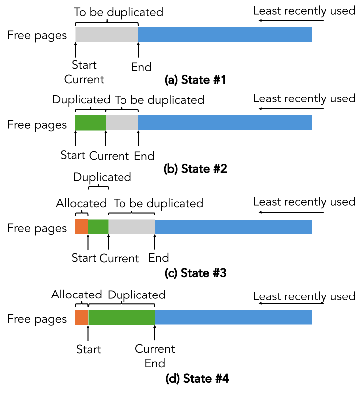
这个设计有一个明确的权衡。如果一个请求要分配的页超过了当前指针（也就是要覆盖还没备份完的页），分配就必须等待，直到当前指针向右移得足够远。所以“复制窗口”（结束指针减起始指针）的大小决定了两件事的取舍：窗口小，多余的复制少，但分配时更容易被卡住；窗口大，分配几乎不会被卡住，但要复制更多可能永远不会被覆盖的页。论文举的例子是：只备份 1 页、而某个请求需要 3 页时，它要等当前指针和结束指针再前进 2 页；如果备份了 3 页，同一个请求可以立即继续，代价是复制比例更高。作者说同样的策略原则上可以推广到 CPU 和 GPU 之外的其他层级，但目前没有实现。
- 这一节的各项优化都没有单独的消融实验。块大小（256）取多大最好、零拷贝省了多少、动态卸载的窗口该设多大、分配停顿出现得多频繁，论文都没有给出数据；第 8.6 节只有“块传输 vs 页传输”的带宽对比和一张异步计算的时间线。
- 块越大，单次传输越高效，但匹配粒度越粗：一个请求的前缀只有凑满整块才能命中，不足一块的尾巴要么重算、要么另行处理。Strata 论文测过页大小从 1 增加到 1024 时命中率下降、TTFT 变差，这个代价在块上同样存在。
- 逐层流水能藏住的只是“和计算一样长”的那部分加载时间。如果命中的前缀很长、需要新算的 token 很少，计算时间太短，加载就藏不住了。
6 标准接口：KV connector 怎样把缓存层和推理引擎解耦
作者再次强调，2025 年平均每周有 15–20 个新模型发布，支持新架构常常要大改推理引擎，例如加入滑动窗口注意力或多头潜在注意力（MLA，见 DeepSeek-V3 精读）。这些改动经常改变 KV 缓存在引擎内部的管理方式，LMCache 不可能每次都临时打补丁。于是 LMCache 引入了标准化的 KV connector 接口，把 KV 缓存管理和引擎后端解耦。论文特别说明：这个 API 由 LMCache 团队发起设计，但实现和维护是 LMCache 与 vLLM 两个团队的共同工作。
vLLM 新版（V1）把推理拆成两类进程。调度器只做决策：每一步决定哪些请求参与计算、每个请求这一步要算多少个 token、给它们分配哪些 KV 页。worker（模型执行器）只做执行：按调度结果把模型跑一遍。前缀缓存是调度器里的一等公民：如果一个请求有 1 万个 token 已经在缓存里，调度器就只让 worker 计算剩下的部分。
CUDA Graph 是一种减少 CPU 开销的技术：先把一整串 GPU 内核的启动“录”下来，以后一次性“回放”，省掉每个内核单独启动的开销。代价是录好的图是固定的，不能在中间插入 Python 代码或等待别的事件。vLLM 采用“分段”CUDA Graph：只录非注意力部分，注意力单独执行。正因为注意力不在图里，才能在每一层注意力前后插入钩子，比如“等第 \(i\) 层的 KV 加载完”或“开始保存第 \(i\) 层的 KV”。
设计目标有四条：最大灵活性，尽可能支持各种 KV 缓存操作；贴合 vLLM 的设计方向，包括严格的调度器—worker 分离、前缀缓存作为一等公民、分段 CUDA Graph；对“树外”连接器友好，第三方的连接器不用改 vLLM 的代码就能接入；接口层零额外开销，例如不在 API 层引入进程间通信。
为了符合 vLLM 的分离原则，接口分成两组。调度器侧：连接器报告的额外命中 token 被当作普通的前缀缓存命中，直接影响调度决策（如果 LMCache 里有命中，这个请求需要新 prefill 的 token 数就变少了）。模型执行侧：在模型执行前后、以及每层注意力计算前后加钩子，既支持整体一次性卸载，也支持逐层卸载。
| 位置 | 论文表 2 中的名字 | 作用 | vLLM 主分支中对应的方法（2026-10-20 核对） |
|---|---|---|---|
| 调度器 | get_num_new_matched_tokens | 返回 LMCache 后端里命中的 token 数；也可以返回“暂不确定”，让 vLLM 先把这个请求放回等待队列、去处理别的请求 | get_num_new_matched_tokens(request, num_computed_tokens)，返回值第一项为 None 时表示“需要更多时间” |
| 调度器 | update_state_after_alloc | 页分配好之后，标记这个请求的哪些页需要从外部后端加载 | 同名 |
| 调度器 | build_connector_meta | 为这一步构造传输所需的元数据，包括 KV 页在显存中的地址 | 同名 |
| 执行器 | start_load_kv | 在推理开始前启动加载 | 同名 |
| 执行器 | wait_load_kv | 在第 \(i\) 层计算前等这一层的 KV 到位 | wait_for_layer_load(layer_name) |
| 执行器 | start_store_kv | 计算后开始把新产生的 KV 存出去 | save_kv_layer(layer_name, kv_layer, attn_metadata) |
| 执行器 | wait_store_kv | 同步，确认某一层已经存完 | wait_for_save()（每步调用一次） |
左边三列按原文表 2 改写；最右一列是本站对照 vLLM 仓库 vllm/distributed/kv_transfer/kv_connector/v1/base.py 的结果。论文表里的函数名和签名是简化写法，执行器侧几个方法的实际名字不同，调度器侧的名字一致。
把这些串起来，一个请求的流程是这样的。请求进入调度器后，调度器先调用 get_num_new_matched_tokens 问 LMCache 后端里命中了多少 token。LMCache 可以返回“暂时没有结果”，让 vLLM 把这个请求放回等待队列、先处理别的请求，从而让这个请求的 I/O 和别的请求的计算重叠（这就是第 5.2 节“异步计算与预取”在接口上的落脚点）。接着 update_state_after_alloc 根据命中信息，决定 vLLM 的每一页是否需要从外部后端加载；如果命中的 token 数大于零，再调用 build_connector_meta 准备加载或存储所需的元数据。
请求到了执行器，在逐层流水的模式下，先调用 start_load_kv 开始把第一层的 KV 加载进显存；每一层计算之前调用 wait_load_kv 等这一层加载完成，并启动下一层的加载；每一层计算之后，先调用 wait_store_kv 等上一层存完，再调用 start_store_kv 开始存这一层新产生的 KV。在不流水的模式下，第一层计算之前用 start_load_kv 阻塞式地把全部 KV 缓存一次加载进对应的分页地址；这一轮调度的计算结束后，再用 start_store_kv 同步地把新 KV 存出去。
影响。论文写作时，这套 API 在 vLLM 里已经上线六个多月，被 NVIDIA Dynamo、Red Hat 的 llm-d、字节跳动的 AIBrix 和 vLLM Production Stack 等开源项目采用，还有多家公司基于它写了自己的私有连接器。本站核对（2026-10-20）：vLLM 主分支注册的连接器包括 LMCacheConnectorV1、LMCacheMPConnector、NixlConnector、MooncakeConnector、MooncakeStoreConnector、HF3FSKVConnector、FlexKVConnectorV1，以及 vLLM 自己的 OffloadingConnector 和 SimpleCPUOffloadConnector 等，说明这个接口确实成了各家 KV 传输和存储方案接入 vLLM 的公共入口。
7 控制器接口：让上层系统知道 KV 在哪、能主动管理它
LMCache 作为分布式缓存系统运行，核心是一个中心化的 KV 缓存控制器，负责全局元数据、缓存操作和请求路由。它分两层：一个独立运行的控制器管理进程，作为全局协调点；以及和每个 LMCache 实例部署在一起的 worker，负责本地操作，或者代表本实例向管理进程发起全局请求。接口也分两类：外部 API 给用户和运维直接调用，由管理进程处理并在必要时分派给各个 worker；内部 API 给各个实例的 worker 主动向管理进程上报或查询。
| 类别 | 接口 | 作用 |
|---|---|---|
| 内部 | batched_admit / batched_evict | 实例把“存入了哪些块 / 淘汰了哪些块”批量报告给管理进程 |
| 内部 | batched_p2p_lookup | 实例本地未命中时，问管理进程哪个同伴实例有这些块，返回（实例、设备、命中块数）列表 |
| 外部 | lookup(tokens) | 查询这段 token 的 KV 缓存在全局的分布：哪个实例、哪种设备、命中多少 token |
| 外部 | move(src, dst, tokens) | 把这段 token 的 KV 缓存从一个（实例、设备）迁移到另一个 |
| 外部 | clear(tokens, inst_id, device) | 清除某个实例某种设备上的这段 KV 缓存 |
| 外部 | pin / unpin | 把这段 KV 缓存钉在某个位置，不被淘汰；或解除 |
| 外部 | compress / decompress | 用指定方法压缩或解压某个位置上的这段 KV 缓存 |
按原文表 3 改写。
论文用几个例子说明这些接口怎么用：
- 感知 KV 缓存的路由。路由器希望把请求送到命中率最高的实例。各实例通过
batched_admit/batched_evict把自己的存入和淘汰决策报告给管理进程，管理进程汇总成一份全局的内存视图。路由器调用lookup(tokens)时，管理进程直接查这份视图，返回（实例、设备、命中 token 数）的列表。 - KV 缓存迁移。某个实例要缩容下线，或者需要负载均衡时，它持有的 KV 缓存可以通过
move迁到别的实例：管理进程把请求派给源实例，源实例和目标实例建立连接（如果还没有），再把指定 token 的 KV 缓存从源设备传到目标位置。 - 点对点共享。一个实例本地未命中时，它的 worker 用
batched_p2p_lookup问管理进程，得到哪些同伴持有这些块、各持有几块，然后比如从命中块数最多的同伴那里拉取。 - 清除。切换模型或回收内存时，应用可以调用
clear，管理进程把操作派给对应实例，由它的 worker 删除指定设备上的那段 KV 缓存。 - 压缩 / 解压、钉住 / 解除钉住这几个接口，论文没有给出具体的应用例子，只说用户可以按需调用；第 3.3 节金融公司“钉住热门文档”的需求就对应
pin。
8 实验：快多少，在什么条件下快
8.1 实验是怎么设计的
| 场景（原文表 4） | 单机 / 多机 | 网络 | 对应的真实用法 |
|---|---|---|---|
| CPU Offload | 单机 | 不涉及 | 单机把 KV 卸载到 CPU 内存 |
| Central Storage | 单机（另有一台存储服务器） | 以太网 | 集中式存储服务器 |
| PD | 单机 | NVLink | PD 分离 |
- 模型：Llama-3.1-8B-Instruct、Sao10K L3 8B、Llama-3.1-70B-Instruct、Qwen2.5-Coder-32B-Instruct、Qwen3-Coder-480B-A35B-Instruct-FP8、Qwen2.5-72B-Instruct；第 8.8 节另用 Qwen3-32B。
- 数据：模拟的多轮问答、LongBench 里的长文问答（TriviaQA），以及 vLLM 官方压测脚本的随机数据。
- 硬件：GMI Cloud 提供的 8×H100 服务器；每个模型用“能启动它的最少 H100 张数”（具体张数论文没列）。远端存储实验用同样多的 GPU，外加一台用 CPU 内存存 KV 的集中式存储服务器。PD 分离实验里 prefill 实例和 decode 实例各用同样多的 GPU，二者通过 NVLink 相连，也就是在同一台机器里。第 8.7 节换成了 B200。
- 指标：TTFT（即 prefill 延迟）和 ITL（相邻两个输出 token 的平均间隔）；分析部件时分别报告各部分的耗时。
- 对照：LMCache 版本 v0.3.6。对照组是 Basic vLLM（vLLM v0.10.2，默认开启前缀缓存，但只在显存里缓存，所以只能留住一小部分）；Basic vLLM CPU Offloading（vLLM v0.11.0 自带的 CPU 卸载实现）；以及两家商业服务 Commercial #1、#2（提供为用户预留 GPU、运行用户自选模型的专属端点，于 9 月 10 日测试，名字未披露）。
第 8 节的大部分图是同一种画法：横轴是每秒到达的请求数（QPS），纵轴是 TTFT 或 ITL。请求少的时候，系统游刃有余，延迟低而且平稳；请求速率接近系统的处理能力时，请求开始排队，延迟突然急剧上升。曲线“拐弯”的位置就是系统能稳定承受的最高请求速率。所以看这类图，主要看两件事：低负载时的延迟高低（单个请求有多快），以及哪条曲线拐得更靠右（能扛多大的负载）。论文说的“同样 TTFT 下吞吐高 N 倍”，指的是在某个 TTFT 水平上，两条曲线横坐标之比；“高 QPS 时 TTFT 低 N 倍”，则往往是对手已经过载、在排长队时的比值，这种倍数主要反映排队时间，不能理解成单个请求快了 N 倍。（详细的例子见 vLLM 精读 §6.1。）
8.2 单机 CPU 卸载：多轮文档问答
负载模拟“用聊天机器人分析文档”：每个请求默认含 1 万个 token，由一份文档（大约 12 页 PDF）作为上下文，加上一个不重复的短问题；Llama-3.1-8B 的请求改为 2 万 token（作者的理由是小模型通常能处理更多更长的请求）。输出是一个最多 100 token 的简短回答。会话开始时有 40 个用户，之后按设定的速率（QPS）不断有新用户加入。LMCache 最多可以用 500 GB CPU 内存存 KV。
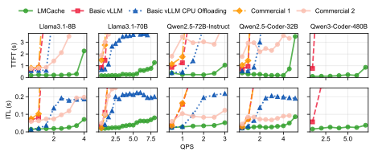
论文报告的结果：在低负载（QPS = 1）时，LMCache 的 TTFT 比各对照组小 1.9–8.1 倍；在同样 TTFT 下，LMCache 能处理的请求速率（即吞吐）是五个模型上最强对照组的 2.3–14 倍；QPS = 1 时，ITL 比最强对照组小 7%–92%。ITL 也变好，是因为对照组在第一个 token 之前要花很长时间 prefill，后面的生成被排在 prefill 后面，字间间隔随之拉长。
作者对收益来源的解释是：和只用显存的 vLLM 比，LMCache 能卸载到 CPU 内存，能存的 KV 多得多，命中率因此高得多（第 2 节的推算是 9 倍左右的容量差）；和 vLLM 自带的 CPU 卸载比，后者按“每层、每 16 个 token”传输，用不满加载带宽，而 LMCache 按块加载、用了高性能的加载内核。和商业服务的比较是黑盒的，作者从结果推测：#1 没有把 KV 卸载到二级存储的机制，#2 大概有，但性能仍不如 LMCache。
8.3 用真实 trace 的长度分布回放
这组实验按两家企业（F 和 G）真实请求的输入、输出长度分布生成负载。因为拿不到 F 公司的私有模型，作者用五个公开模型回放 F 的 trace，另外用 Llama-3.1-70B 回放 G 的分布。原始 trace 持续好几天，为了能在一小时内跑完，作者把它在时间上压缩了。LMCache 最多用 500 GB CPU 内存，对照组是开启显存前缀缓存的最新版 vLLM。
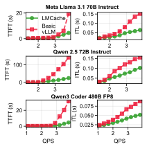
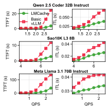
论文报告：高 QPS 时，LMCache 的 TTFT 比 vLLM 低 3.7–6.8 倍，ITL 低 19%–58%（图 9 的三个模型为 4.4–6.6 倍和 34%–58%，图 10 的三组为 3.7–6.8 倍和 19%–44%）。从图上看，低 QPS 时两条线基本重合，差距是在 vLLM 开始过载后拉开的。
8.4 集中式远端存储
这组实验把 KV 缓存存到一台集中式的远端服务器（用 CPU 内存存储），它和 GPU 机器之间的带宽只有 15 Gbps。数据用 LongBench 中的 TriviaQA，按 vLLM 官方压测脚本以泊松过程产生请求。
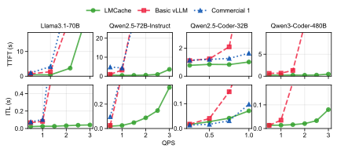
论文报告：在同样 TTFT 下，LMCache 带远端后端比 vLLM 的吞吐高 1.3–3 倍，原因是远端后端能存的 KV 远比 CPU 内存多，命中率更高。作者同时提醒：远端后端的带宽低得多，加载延迟比从 CPU 内存加载大，当输入上下文较短或模型较小时，prefill 本身很快，加载延迟甚至可能超过 prefill（第 8.7 节会演示），所以 KV 在远端时，需要自适应地决定是加载还是重算。
8.5 PD 分离
这组实验和 vLLM 原生的 PD 分离比，负载是 vLLM 官方压测脚本的随机输入输出：输入 8K token、输出 200 token。
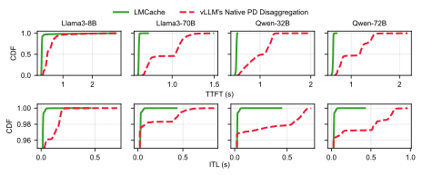
论文报告：LMCache 的平均 TTFT 低 1.53–1.84 倍，平均 ITL 低 1.12–1.66 倍，尾延迟明显更好。（正文说图中展示的是 P95 TTFT，但图本身画的是完整的 CDF。）
差别来自 KV 的传输方式。LMCache 在 prefill 端把分块 prefill 产生的每一块 KV 先拷到 prefill 实例显存里的缓冲区，再整块传到 decode 实例对应的缓冲区，收到后再拷进 decode 实例的分页显存。vLLM 原生的 PD 分离则用 NIXL 的内存拷贝函数，直接把 prefill 端的分页 KV 发到 decode 端：输入是 prefill 端各页的地址和 decode 端的目标地址。当这些页在 prefill 端的显存里分散存放时，传输就变成一页一页地进行，带宽用不满——也就是第 3.1 节说的问题。
8.6 拆开看：收益来自哪里
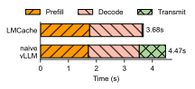
PD 分离。上图说明，prefill 和 decode 的计算时间两边相同，vLLM 原生方案以更细的粒度传 KV，带宽用不满，传输时间明显更长；LMCache 的传输更高效，端到端延迟因此下降。
CPU 卸载的加载带宽。原文表 5 直接对比从 CPU 内存加载 KV 时实际达到的带宽：LMCache 为 400 Gbps，vLLM 原生 CPU 卸载为 88 Gbps。原因同样是传输粒度：原生实现一页一页搬，LMCache 一块一块搬；每次传输都会触发一次 CUDA 内存拷贝，事先要准备元数据、事后要发完成信号，这些固定开销摊到每次拷贝上，块越大摊得越薄，有效带宽就越高。换算一下（推算）：400 Gbps 即 50 GB/s，约为 PCIe 5.0 x16 单向峰值 64 GB/s 的 78%，和第 3.1 节“1–2 MB 以上的传输能用到 75%–80%”一致；88 Gbps 即 11 GB/s，约 17%。以 Llama-3.1-8B 的一份 2 万 token 文档（2.62 GB）为例，前者约 52 毫秒，后者约 238 毫秒。
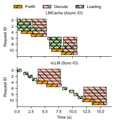
异步计算。论文报告：开启请求异步化之后，prefill / decode 计算可以和 KV 加载重叠，端到端延迟降低 1.46 倍。这对应第 6 节里 get_num_new_matched_tokens 可以返回“稍后再问”、让 vLLM 先算别的请求的机制。
8.7 敏感性：什么时候加载不如重算
“从别处加载 KV”并不总比“重新 prefill”快。加载的耗时和 token 数成正比：每个 token 的 KV 字节数固定，带宽固定。重算的耗时却比线性增长得更快：除了和长度成正比的矩阵乘法，注意力的计算量和长度的平方成正比。把两者都除以 token 数 \(T\)，比较“每个 token 的平均成本”，就能看出交叉点：
这里 \(s_{\text{kv}}\) 是每 token 的 KV 字节数，\(B\) 是加载带宽，\(N\) 是参数量（每个 token 过一遍模型约需 \(2N\) 次浮点运算），\(n_{\text{layer}}\)、\(d_{\text{model}}\) 是层数和隐藏维度，\(F_{\text{eff}}\) 是 GPU 实际达到的算力。左边是常数，右边随上下文长度 \(T\) 线性增长，所以存在一个交叉长度：比它短，重算更划算；比它长，加载更划算。带宽 \(B\) 越低，左边越大，交叉点越往后推。
代入一个例子（推算，假设 \(F_{\text{eff}}\approx400\) TFLOP/s，约为 H100 BF16 峰值的 40%）：Llama-3.1-8B 每 token 的线性部分是 \(2N\approx16\) GFLOP，约 40 微秒。用 LMCache 从 CPU 内存加载（50 GB/s），每 token 128 KiB 只要约 2.6 微秒，远比重算便宜；改用第 8.4 节那种 15 Gbps（1.875 GB/s）的远端，每 token 要约 70 微秒，在短上下文时比重算还慢。注意力那一项每 token 约 \(2\times32\times4096\times T\approx2.6\times10^{5}\,T\) FLOP，要等它补上 30 微秒的差距，\(T\) 大约要到 4.6 万 token。这个例子正好解释了作者在第 8.4 节的提醒：模型小、上下文短、链路慢时，加载可能得不偿失。模型越大，每字节 KV 对应的计算越多（70B 每 token 约 140 GFLOP 对 320 KiB，每字节对应的计算量约为 8B 的 3.5 倍），加载就越早划算。
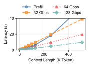
论文的结论是：KV 加载应该是自适应的，低带宽时只有上下文长度超过交叉点、加载比 prefill 快时才去加载。论文没有说明这组实验用的是哪个模型、多少张 B200。从图上的读数可以反推（读图 + 推算）：32 Gbps（4 GB/s）下 256K token 加载约 19.5 秒，相当于每 token 约 300 KB，和 70B 一级、8 个 KV 头的模型（每 token 320 KiB）对得上；但这只是推测。
想自己换模型、换链路算一算，可以用下面的计算器（只显示 KV 部分）：它给出每 token 的 KV 字节数、一条请求的 KV 总量和经不同链路传输的时间，以及 prefill 的理想耗时。注意计算器里的 prefill 时间是按 GPU 峰值算力估的下限，真实 prefill 更慢，所以真实的交叉点会比计算器显示的更早到来。
8.8 接在 SGLang 上
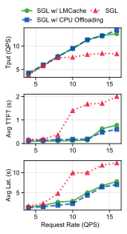
论文报告：在 SGLang 上，LMCache 比不卸载的 SGLang 吞吐更高、平均 TTFT 和端到端延迟更低，和 SGLang 自带的 CPU 卸载性能相当。作者补充说，SGLang 自带的方案缺少分布式存储后端，不能把数据分层卸载到本地磁盘、远端 CPU 或磁盘。这里的“SGLang 自带的 CPU 卸载”论文没有点名，指的应是 SGLang 的分层缓存 HiCache（见“后来怎么样了”）；值得注意的是，HiCache 后来也接上了 Mooncake、3FS 等远端后端。
8.9 结果的份量
把上面的实验放在一起，可以这样理解这些数字：
- 和谁比。最大的倍数（2.3–14 倍、3.7–6.8 倍）都来自和“只在显存里缓存的 vLLM”比较，也就是“有 CPU 这一层”对“没有这一层”；它衡量的主要是多出一层容量带来的命中率差距，而不是 LMCache 的实现比别的分层缓存好多少。真正“同类相比”的只有三组：vLLM v0.11.0 自带的 CPU 卸载（这是 vLLM 的早期版本，作者自己指出它按每层每 16 token 传输）、vLLM 原生 PD 分离（基于 NIXL 逐页传输）、SGLang 自带的 CPU 卸载（结果是持平，高负载时略逊）。两家商业服务没有名字，内部实现、硬件和部署方式都未知，比较是黑盒的。同期的 Mooncake Store、NVIDIA Dynamo 的 KV 管理、TensorRT-LLM 的卸载功能、带远端后端的 SGLang HiCache 都没有出现在对比里。另外，作者是 LMCache 的开发者，也是 Tensormesh 的创始团队，对照组是由他们配置的。
- 硬件与规模。主要实验在一台 8×H100 上完成，每个模型用的 GPU 张数没有列出；“PD 分离”的两个实例在同一台机器上通过 NVLink 相连，不涉及跨机网络；“远端存储”是一台用 CPU 内存存 KV 的服务器，链路 15 Gbps；敏感性实验换成了 B200。跨机、跨机架的大规模部署没有实验数据。
- 指标与负载。CPU 卸载实验的负载是为前缀缓存量身定做的：每个请求 1–2 万 token 的文档加一个短问题，输出不超过 100 token，复用率高、prefill 占绝对主导。这正是 KV 缓存收益最大的情形；输出长、复用少、上下文短的负载，收益会小得多。“高 QPS 时 TTFT 低几倍”是对照组过载排队时的比值。第 8.2 节的多轮问答负载怎么定义 QPS（新用户加入的速率还是请求速率）写得不清楚。
- 有损还是无损。实验里 LMCache 存取的是原样的 KV 缓存，不改变模型计算的内容，所以不涉及精度损失，论文也没有做质量评测。控制器里的压缩接口（以及同组的 CacheGen、CacheBlend）是有损的，但没有在本文实验中评估。
- 部件级的数字。400 Gbps 对 88 Gbps 的加载带宽、1.46 倍的异步收益、3.68 秒对 4.47 秒的 PD 分解，都没有说明用的是哪个模型、多大的上下文、块多大。块大小、动态卸载窗口、零拷贝等设计都没有消融实验。
- 生产数据。第 2 节的使用统计和第 9 节的企业经验（22%–32% 的 TTFT 改善、85% 到 45% 的命中率下降、50% 的命中率）都来自用户或客户，只给相对值或单个数字，统计方法、模型、时间段都没有披露，属于“作者转述的生产观察”，不是可复现的实验。
- 几处对不上的地方。摘要的“最高 15 倍”在 v2 正文中找到的最大值是 14 倍；引言的“延迟至少降低 2 倍”与第 8.2、8.5 节低于 2 倍的数字矛盾；第 8.4 节“在所有 QPS 上都优于所有对照组”与图 11 中 Qwen2.5-Coder-32B 的 ITL 不符。这些不影响“分层缓存 + 大块传输有明显收益”这个定性结论，但具体倍数应按各小节的条件来读。
9 真实部署的经验
从远端存储加载可以比 prefill 快。过去人们普遍认为，把 KV 缓存放到远端存储，主要是为了用更便宜的设备换更高的命中率、降低存储成本，代价是推理延迟变高，因为从远端读比重算还慢。这个印象很大程度来自远端对象存储过去的低吞吐，例如 Amazon S3 的读取速度可以低到 100 MB/s。但远端存储的性能近年提升很大，例如 Amazon S3 Express 的吞吐从 100 MB/s 提高到接近 1 GB/s。作者的用户 C 公司用 LMCache 从自己的远端对象存储加载 KV 缓存，TTFT 比完整 prefill 低 22%–32%。作者的结论是：远端后端可以同时提高命中率和降低 TTFT。按第 8.7 节的分析，这件事成立的前提是上下文足够长、模型足够大，否则 1 GB/s 量级的带宽仍可能输给重算。
截断上下文会大幅降低前缀命中率。许多企业用户用滑动窗口处理超长输入：输入超过模型上下文窗口（或者显存装不下）时，只保留最近的那些 token。这样做的问题是，截断后的输入不再和之前缓存过的上下文共享前缀。作者用 F 公司的真实 trace 测得：只保留最新 token 的截断，让前缀缓存命中率从约 85% 降到约 45%。论文还引用了 Manus 团队关于智能体上下文工程的博客，那里也强调要避免动态增删上下文 token，因为这会让前缀 KV 缓存失效。
用户更喜欢容器化的代码。推理规模越来越大，生产环境大多用 Kubernetes 管理 GPU 集群，所以通过 Docker 镜像部署 vLLM、SGLang 和 LMCache 已经是工业用户的标准做法。有意思的是，很多用户只用官方镜像，从不深入 LMCache 的源代码。
生产中的命中率比预想的高。客户在部署 LMCache 之前，往往没想到生产环境的前缀命中率会这么高，例如 G 公司达到了 50%。过去人们以为 KV 缓存只能复用固定的系统提示；但现代应用越来越多地出现“动态可复用的上下文”，比如编程助手和聊天应用里的对话历史、RAG 流程里的检索结果，这些模式显著提高了整体命中率。
工业用户与学术用户。LMCache 在 2024 年 5 月被设计成一个统一的原型框架，用来承载作者组的研究成果。但工业界当时最想要的是一个高效的 KV 卸载方案，因为 KV 缓存的规模和并发用户数都在增长。于是团队把重心转向性能、稳定性和兼容性。由于大多数公司不太关心定制注意力算法，团队降低了“方便集成特殊注意力机制（例如有选择地丢弃 token）”的 API 的优先级，这使得 LMCache 在学术界不那么受欢迎，因为研究者常常要改注意力机制来做原型。作者说下一步要设计更灵活的 API，兼顾两类用户。
编程语言：灵活还是性能。Python 一直是机器学习的事实标准语言，但业界的重心正从广泛兼容转向更高效率：很多公司在用 Rust 或 C++ 重写机器学习库，或者精心优化 Python 系统、把运行时开销藏起来。作者选择继续用 Python 并做针对性优化，理由是这样演进更快、社区贡献更多，性能仍能和用其他语言写的方案持平。（v1 补充说，性能关键的数据加载模块仍然用 CUDA 实现。）
LMCache 现在是社区项目。大约一年前，LMCache 只支持本地 CPU、本地磁盘和 Redis 三种后端，只能接 NVIDIA GPU 上的 vLLM。论文写作时，它又多支持了 8 种存储后端（NFS、WEKA、GPU-Direct Storage、Mooncake Store、NIXL、S3、InfiniStore、Valkey），4 类处理器（NVIDIA、AMD、昇腾、TPU），以及 vLLM 和 SGLang 两种引擎。作者说这些贡献都来自工业伙伴，他们主动把代码合并回主线，以免和最新版本分叉。
10 结论与展望：把 KV 缓存当作一种数据
论文的结论是：LMCache 不把 KV 缓存当作推理过程的副产品，而是当作一种一等数据结构，从而把一个个孤立地处理 token 的推理引擎，连成了一个由计算和存储组成的分布式系统。实验显示，相对开源基线和商业推理 API，它在多种负载和模型上都带来了明显的吞吐提升和延迟下降；在生产中，企业用它的 CPU 卸载、分层存储和 PD 分离功能，在万亿 token 规模的部署中保持低延迟、降低成本。作者还提到部署中发现的新机会，例如推荐系统里的 KV 缓存复用（v1 详细说过：一些公司用大模型对很长的用户上下文做 prefill、生成嵌入而不生成文字，同一用户的上下文被反复使用），以及在开放式聊天中使用有损压缩。
展望部分，作者把 LMCache 放进一个更大的判断里：KV 缓存这样的“AI 原生数据”会越来越成为扩展大模型推理和智能体负载的基础，推理不再是一次次孤立的会话，而是一个持久的、感知缓存的计算网络。把 KV 缓存标准化成一种存储和通信的介质，是这一方向的基础设施。
后来怎么样了
LMCache 论文发表前后，“把 KV 缓存分层存起来”已经成了推理系统的一条主线。下面先说 LMCache 项目本身的发展，再用两个小节讲同期最重要的两项相关工作：Strata（OSDI 2026）和 SGLang HiCache。标“据项目博客”的条目是项目方自述，其余条目核对过对应的仓库、论文或第三方页面。
LMCache 项目本身
- 版本与仓库。论文评测用的是 v0.3.6（2025-09-15 发布）；截至 2026-10-20，最新正式版本是 v0.5.6（2026-10-14 发布），仓库有 12,125 个 star、2,187 个 fork，Apache-2.0 许可，创建于 2024-05-28。
- 生态位置。2025-09，NVIDIA Dynamo 宣布集成 LMCache 作为 KV 缓存层（据项目博客）；2025-10-30，PyTorch 官方博客宣布 LMCache 成为 PyTorch 生态项目；同月 Tensormesh 公司公开亮相（据公司页面）。vLLM 主分支里，
LMCacheConnectorV1之外又多了一个LMCacheMPConnector（本站核对）。 - 多进程架构。2026-04，LMCache 发布“多进程（MP）模式”：KV 缓存由一个独立于推理引擎的守护进程统一管理，同一台机器上的多个引擎进程（例如数据并行的多个 rank）共享同一个 KV 池，推理引擎崩溃时缓存也不会丢失（据项目博客与 README）。这和 v1 里“把数据搬运放进单独进程可以消除 5%–10% 的 CPU 争用开销、并让多个实例共享内存池”的经验一脉相承。
- 非前缀复用。README 列出的功能里包括基于 CacheBlend 的非前缀复用：缓存的 KV 块出现在提示中任意位置也能复用，靠有选择地重算少量 token 恢复质量。这弥补了第 9 节截断例子里“前缀一变就全部失效”的短板，但它是有损的。
Strata：把带宽跑满，让调度器知道“加载”也要时间
Strata（arXiv 2508.18572，2025-08 首发；正式发表于 OSDI 2026）的作者来自 Stanford、NVIDIA、上海交通大学、科罗拉多大学博尔德分校、CMU 和密歇根大学，第一作者 Zhiqiang Xie 也是 SGLang 的作者之一；LMCache 论文的作者 Yuwei An 同时是 Strata 的作者（Strata 中署名 CMU）。两篇论文互相引用：LMCache v2 用 Strata 的测量说明“1–2 MB 的传输才能用到 PCIe 5.0 的 75%–80%”，Strata 则把 vLLM + LMCache 当作主要对照组之一。Strata 实现在 SGLang 里，并部署在一家头部 AI 公司的生产环境。arXiv 版标注“under peer review”，本页的数字按 arXiv v1。
它看到的问题。Strata 专门研究长上下文、以 prefill 为主的负载，指出了分层缓存的两个瓶颈，和 LMCache 第 3 节的判断一致，但往前多走了一步。第一是 I/O 碎片化：在 H200 上用 Llama-3.1-8B、页大小 32 时，加载 8,192 个 token 的 KV 只用到 PCIe 5.0 理论带宽的约 22%；在 CPU 与 GPU 之间带宽高 6 倍的 GH200 上，利用率更是低到约 5%。把页调大能改善传输，却会降低命中率：在 SGLang 上用 Mistral-24B 和 ShareGPT 测，页大小从 1 增加到 1024 时，平均 TTFT 和 P90 TTFT 分别最多变差 2 倍和 2.9 倍。第二是调度器不知道加载要花时间：现有系统默认“新 token 的 prefill 计算足以掩盖历史 KV 的加载”，但当缓存的上下文很长、新 token 很少时，这个假设不成立。他们在 LooGLE 数据集上用 Qwen2.5-14B 测得，SGLang 把 KV 卸载到 CPU 时，74% 的 prefill 时间卡在 KV 传输上，吞吐最多降到四分之一；即使换上他们优化过的 I/O，仍有最多 24% 的 prefill 时间在等加载。
对策一：GPU 辅助 I/O。LMCache 的办法是“把小页拼成大块再交给 DMA 引擎”，Strata 换了一个思路：不用 cudaMemcpyAsync 反复发起小拷贝，而是启动一个 CUDA 内核，让几千个 GPU 线程各自从源地址（显存或锁页的主机内存）读一小段数据进寄存器，再写到目的地址。按利特尔定律 \(X=C\cdot S/L\)，这一招把在途传输数 \(C\) 从 CPU 能维持的几十个提高到几千个，而且每个线程只需要 128 字节的粒度就能高效传输，不必再放大 \(S\)。因为搬运是 GPU 线程自己做的，顺便还能变换布局：GPU 里保持计算友好的“按层优先”布局，CPU 内存和磁盘上改用传输友好的“按页优先”布局（同一页的所有层连在一起），每个线程只需对偏移量多做一次算术。代价是占用 GPU 的计算资源。Strata 把 I/O 内核限制在很少的 SM 上：在 H200 上只用两个 1024 线程的线程块，就跑出接近 50 GB/s，对同时运行的 prefill 和 decode 的拖慢分别小于 5% 和 10%；默认用两个块做 CPU 到 GPU 的加载（关键路径），一个块做 GPU 到 CPU 的备份。从磁盘加载时，按页优先的布局让延迟最多降低 4 倍。
对策二：感知缓存的调度。Strata 把 CPU 与 GPU 之间的带宽当作和算力、显存同等重要的资源来调度，分三步：
- 推迟“延迟命中”。“延迟命中”（delay hit）是网络缓存里的概念：多个请求访问同一个对象，第一个请求的未命中还没处理完，后面的请求也跟着未命中。在推理里，几个共享同一份长文档的请求如果被放进同一批，会把同一段前缀重复 prefill 好几遍；异步调度器（提前准备下一批）让这种情况更常见。Strata 在 SGLang 的基数树里插入临时节点，标记“排队中”或“计算中”，后来的请求如果匹配到这些节点（超过 100 个 token），就推迟到下一轮、并排在队首，等前面的请求把这段 KV 算好再复用。
- 均衡组批。组一批 prefill 时，估计每个请求的“要加载多少”和“要计算多少”，如果加入某个请求会让整批的加载量与计算量之比超过阈值（默认 100），就先把它放到次优先列表，优先挑能和已选请求共享上下文的请求；为防饿死，次优先请求保持原顺序，每次组批都从队首开始。
- 填气泡。如果某一批仍然要等很久的加载，就先插入一批 decode 计算。decode 主要消耗显存带宽，加载主要消耗 PCIe 带宽，两者可以并行而几乎不争资源。
| ① 按到达顺序组批：请求 C、D 都要加载长上下文 | |||||||||
| PCIe（加载） | C | C | D | D | |||||
| GPU（计算） | C | D | F | ||||||
| ② 均衡组批 + 填气泡：C 与无需加载的 F 同批，等待期间插入 decode | |||||||||
| PCIe（加载） | C | C | D | D | |||||
| GPU（计算） | F | dec | C | dec | D | ||||
结果与条件。Strata 在 8×H200（每卡 PCIe 5.0 x16，1.6 TB 内存）和 GH200 上评测，模型为 Llama-3.1-8B、Qwen2.5-14B-Instruct-1M（单卡）和 Llama-3.1-70B（4 卡张量并行），数据为 LooGLE（平均输入 21,613 token）、NarrativeQA（54,797 token）、ReviewMT（17,708 token）和短上下文的 ShareGPT；CPU 内存给 1 TB 锁页内存，不使用磁盘。对照组是 vLLM v0.8.5 + LMCache v0.2.1（块 256、页 32）、TensorRT-LLM v0.17.0 自带的 CPU 卸载、SGLang v0.4.5，以及作者在 SGLang 上实现的一个“逐层重叠 + cudaMemcpyAsync”的分层缓存基线。在 LooGLE 上，同样 TTFT 下 Strata 的吞吐：Llama-8B 上是 SGLang 分层基线、vLLM + LMCache、TensorRT-LLM 的 3.2、2.6、1.9 倍；Qwen-14B 上是 3.9、2.1、1.9 倍；Llama-70B 上是 5、5、3.75 倍。预热好 CPU 缓存的 NarrativeQA 上，对 vLLM + LMCache 是 2.3–2.6 倍。短上下文的 ShareGPT 上与其他系统相当。消融显示，GPU 辅助 I/O 和调度分别把峰值吞吐提高到 2.3 倍和 1.8 倍；在 GH200 上，GPU 辅助 I/O 把实际带宽从 40 GB/s 提到 150 GB/s。
- Strata 对比的是 LMCache v0.2.1（2025 年上半年的版本），而 LMCache 论文评测的是 v0.3.6，两者相差几个月的开发；两篇论文的数字都只是各自时间点的快照，不能直接说谁比谁快多少。
- Strata 的 arXiv 摘要说“TTFT 最多低 5 倍”，OSDI 版摘要改成了“吞吐最多高 5 倍”；正文里的 5 倍是 Llama-70B 在 LooGLE 上“同 TTFT 下的吞吐”。
- Strata 的场景是单机内 GPU 与 CPU 之间的加载，论文明确说它不研究跨机的分布式缓存池，可以和 Mooncake 这类传输引擎结合；LMCache 的重点则是跨引擎、跨机器和多种后端。两者解决的是同一问题的不同切面。
SGLang HiCache：Strata 的思路进了 SGLang 主线
2025-09-10，Zhiqiang Xie 在 LMSYS 博客发布 SGLang HiCache，致谢中列出了 Strata 的几位作者，以及“来自 LMCache 的 Yuwei An”。HiCache 把 SGLang 的 RadixAttention 扩展成 HiRadixTree：这棵基数树充当跨层级的页表，记录每段 KV 在 GPU、CPU 内存还是外部存储里；一个缓存控制器负责在各层之间自动加载和备份。它的数据面就是 Strata 的两招：GPU 辅助的 I/O 内核（博客称 CPU 与 GPU 之间的吞吐最多提高 3 倍），以及 GPU 按层、主机按页的解耦布局（配合零拷贝，与存储层之间的吞吐最多提高 2 倍）。控制面上，命中 CPU 内存时逐层重叠加载；命中外部存储时，在请求排队期间预取，预取策略可选“尽力而为”“等预取完成”“超时即止”；写回下层的策略有直写、只备份热点的选择性直写和回写三种。
和 LMCache 相比，HiCache 的存储后端接口非常窄：后端只需实现 get(key)、exist(key)、set(key, value) 三个函数，调度和同步都由中心的缓存控制器负责。博客发布时已接入 Mooncake、3FS、NIXL 和一个本地文件后端。博客引用的社区数据是：Novita AI 在 Qwen3-Coder-480B 的编程智能体场景（每个会话约 8 轮、超过 25K token）用 HiCache 加 3FS，平均 TTFT 降低 56%、吞吐翻倍、命中率从 40% 升到 80%；蚂蚁集团在 PD 分离部署的 DeepSeek-R1-671B 上用 HiCache 加 Mooncake，命中时 TTFT 比完整重算平均降低 84%；SGLang 团队自己测得吞吐最多 6 倍、TTFT 最多降低 80%。这些都是厂商或项目方的自述，条件不完全公开。
回头看第 8.8 节：LMCache 论文里那条和 LMCache 持平、高负载时还略好的“SGLang 自带 CPU 卸载”曲线，指的应当就是 HiCache 的 CPU 内存这一层。两条路线在 2025 年下半年事实上汇合了：都承认“分页 + 小传输”是瓶颈，都做分层存储和预取，都支持 Mooncake、NIXL 等后端；不同在于 LMCache 是一个独立于引擎、同时服务 vLLM 和 SGLang 的外挂层，HiCache 则是 SGLang 内建的功能。
还没有回答的问题
- 存什么、存多久。LMCache 论文几乎没有讨论淘汰策略。Mooncake 的期刊版报告过线上高峰期命中率跌到 20% 以下、靠分层存储和按语义淘汰在离线分析中把命中率从 27% 提到 52%（见 Mooncake 精读），说明“存得下”之后，“该留哪些”才是难题。
- 模型结构在变。MLA 等压缩 KV 的结构让每 token 的 KV 小得多，同样带宽能搬更长的前缀；混合了线性注意力的模型则有不能任意截断的递归状态，只能在存了快照的边界复用。拆解页整理了这些变化对分层缓存的影响，见 KV 缓存分层存储 · 压缩 KV 与递归状态。
- 独立的横向评测。截至 2026-10，本站没有找到一份由第三方在同一硬件、同一负载下同时比较 LMCache、SGLang HiCache、Mooncake Store 和 Dynamo KV 管理的公开评测；现有数字都来自各项目自己的论文和博客。
作者
单位按论文署名（arXiv v2）。背景只列可公开查证的信息：作者主页、实验室与公司页面、论文署名。v1 的作者顺序是 Yihua Cheng、Yuhan Liu、Jiayi Yao（三人共同一作）在前，没有 Rui Zhang（v1 致谢中感谢他负责部署），Junchen Jiang 同时标注两个单位；LMCache 仓库 README 给出的引用格式仍按 v1 的顺序，以 Yihua Cheng 为第一作者。
影响力
- 引用：见页首（Semantic Scholar 快照）。
- 发表：arXiv 预印本（v1 2025-10-08，v2 2025-12-05），论文自称“报告”；截至 2026-10-20，Semantic Scholar 只收录了 arXiv 版本，本站没有查到正式发表的会议或期刊版本。
- 开源：LMCache/LMCache 12,125 个 star、2,187 个 fork（截至 2026-10-20），Apache-2.0；2025-10-30 成为 PyTorch 生态项目。
- 采用：论文称 vLLM Production Stack、NVIDIA Dynamo、llm-d、KServe 用 LMCache 实现 KV 缓存；vLLM 主分支内置
LMCacheConnectorV1与LMCacheMPConnector；作者推动的 KV connector 接口被 NIXL、Mooncake、3FS 等多种传输和存储方案用来接入 vLLM（本站 2026-10-20 核对 vLLM 仓库）。 - 商业化：作者团队创办了 Tensormesh，2025-10 公开亮相；公司页面称 2026-05 完成 2,000 万美元融资，投资方包括 AMD Ventures、CoreWeave 和 NVentures。
延伸阅读
- 相关精读：KVzip
- KV 缓存分层存储（结构拆解）：存储层级与加载路径的交互图、LMCache 与 Strata 的组件拆解、KV 传输计算器和简答题。
- vLLM 精读：KV 缓存、PagedAttention、换出到 CPU，本文的出发点。
- SGLang 精读：RadixAttention 与前缀缓存，HiCache 的前身。
- Mooncake 精读：以 KV 缓存为中心的分离式架构与跨机 KV 缓存池。
- DistServe 精读：PD 分离、TTFT / TPOT 与 KV 传输开销。
- DeepSeek-V3 精读：MLA 如何压缩每 token 的 KV。
- PD 分离（结构拆解）
- SGLang / RadixAttention（结构拆解）
- vLLM / PagedAttention（结构拆解）
- 推理基础：prefill、decode、KV 缓存的入门。
- 返回论文书架
本页是对论文的中文精读笔记，正文为本站撰写，并非翻译。按 arXiv v2 讲解，并对照了 v1。数字与结论以原文为准：arXiv:2510.09665。文中的原图（原文图 1–16）取自该论文 arXiv HTML 版，论文以 CC BY 4.0 许可发布，版权归原作者（Yuhan Liu 等），本站未做修改；原文表 1–5 的数据以本站自己的表格或示意图重新呈现。其余图均为本站绘制的示意图。“后来怎么样了”一节引用的 Strata 数字来自 arXiv:2508.18572（CC BY 4.0）与 OSDI 2026 会议页，SGLang HiCache 的内容来自 LMSYS 博客，均未使用其原图。